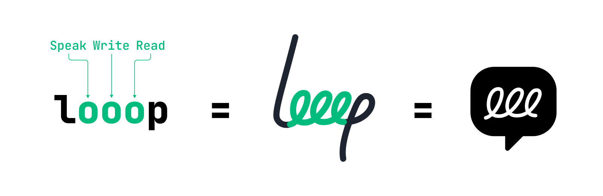

Speak. Shape. Keep working.
Reading brings in context. Speaking catches a thought before it slips away. Writing is where people test, shape, and refine it into something useful. But these moves are scattered across apps, the clipboard, a translator, and a chat box; every hop breaks momentum and drops context on the floor. Looop offers several ways to start in the moment — from an always-on docked bar to a bar that lands at your cursor — then keeps the work moving in one continuous place.
Working prototype · modes & cleanup
Input quality is no longer about typing speed
As AI becomes a daily collaborator, what matters is how easily you can catch a thought, shape it, and keep working with it.
On desktop, much of the work still happens in writing and development. Writing is not just expression: like sketching, it is how people test, revise, and shape an idea. The design question is therefore not simply how to capture speech, but how to help people quickly catch a stream of thought, organize it into something usable, and keep refining it without breaking momentum — especially in long-form writing and Vibe Coding.
Raw transcription isn't usable text
Speech-to-text captures words literally. But real speech never arrives clean — and cleaning it up is work.
Raw voice transcription captures words literally, but real speech includes:
- Self-corrections — “month over month, sorry, year over year.”
- Fillers and false starts — “um,” “like,” “let me think.”
- Topic drift — a lunch tangent in the middle of a business recap.
This creates heavy cleanup work before the text becomes usable.
Quotes, numbers, commitments — you need it word-for-word.
Drafting, summarizing, prompt writing — you need clear intent, not the mess.
Make voice useful without taking people out of their work
The opportunity was not another destination AI app. It was a system layer that could help in the moment, without making speech feel less trustworthy.
Voice input has to remain close to the caret and the active task — not pull people into a separate AI workspace.
Quotes, numbers, and commitments matter. Any cleaner interpretation must keep the original words available.
One bar cannot become another complex command surface; it needs to surface the next useful action from context.
The model must stretch from long-form writing to cross-language work and prompt editing — not solve a single demo case.
Stay in the work. Let context shape the next step.
Looop is not another destination AI app. It stays inside the work already in progress, then uses the caret, selection, and output state to offer the next useful action.
The solution is built around three connected decisions:
- Stay where work happens — Looop remains close to the document, code, or chat already in progress, rather than pulling people into a separate AI workspace.
- Start from context already there — the caret, selection, clipboard, and active app determine where the interaction begins and what the next useful action is.
- Keep transformation visible and reversible — AI can organize and refine, but users can inspect the reading, edit the result, and recover the original words.
Preserves wording fidelity for precision-sensitive tasks — quotes, numbers, commitments.
Resolves spoken repairs, drops low-value noise, and outputs a cleaner structure for drafting.
VERBATIM · RAW, NOTHING DELETED
Um... so, this month... let me think, the recap... so user growth, yeah, it's... it's actually okay? Like new users, they went up, uh, ten-something percent, somewhere around there. But retention, retention's kind of... yeah it's not great, kinda lagging, and I feel like it's the — the onboarding thing? Maybe? I should... yeah I gotta talk to product about that. Oh, and — wait, there was another thing, the ads, the conversion rate over there, I wanna look at that too, 'cause something's just... I dunno, feels off. Oh, right, lunch — gotta order something, I forgot to bring food today. Anyway, uh... next week, first thing, I'll pull the retention data and — no, wait, actually, no — first I should just do the onboarding myself, like actually go through the whole flow, and, yeah, see where it's breaking.
INTENT · RESOLVED & STRUCTURED
Monthly recap
- User growth is healthy — new users up ~10%+.
- Retention is weak — likely an onboarding issue; sync with product.
- Ad conversion quality looks off — worth a review.
NEXT WEEKWalk through the onboarding flow myself first to find where it breaks, then pull the retention data.
Verbatim shows everything actually said — raw. The styling never rewrites; it only marks what each span becomes in Intent. Three semantic tiers, three visual treatments — never one blanket strikethrough.
.fill.drop.fixOne handle. The context picks the verb.
Where your cursor or selection sits is the universal handle. The whole loop — bring context in, produce, refine — lands on the same bar, and context decides which verb it offers. Five features stop being a menu and fall into place.
A voice you can recognize
Looop gives speaking, shaping, and working on text one recognizable form: its continuous mark turns the abstract loop between voice, writing, and reading into a product people can see and learn.

Make speech feel continuous
The loop begins as one continuous stroke. In loading states, it draws forward and erases from behind, so processing feels like a thought still moving — not a generic wait.
Make focus easy to read
Blue is reserved for moments that need attention: a spoken self-correction, or, in onboarding, the hotkey people need to press. The surrounding interface stays quiet, so the cursor, selection, and result lead attention.
Carry identity into the workflow
The same curve and contrast carry from the menu-bar mark to onboarding, live capture, and the result workspace — making separate entry points feel like one product.
See it in the work people already do
Each scenario follows the same arc: current context, a spoken request, an interpreted action, and a result the user can still check.
Make transformation useful, inspectable, and recoverable
From resolving a spoken repair to editing a finished result, each capability makes the path from raw speech to useful output visible.
We should review onboarding and investigate the drop in ad conversion quality.
Raw
Structured
Getting to first success
A new user reaches their first win by solving exactly three things — nothing more in the way.
Demo · first-run onboarding
From a spoken thought to work in progress
The value is not simply faster text entry. It is preserving momentum while people turn a fragment, correction, or instruction into something they can read, revise, and use — while keeping the original speech recoverable.
I carried the work from problem framing through interaction model, capability logic, visual expression, and an implementation-aligned demo — turning the concept into behavior people can inspect and experience.